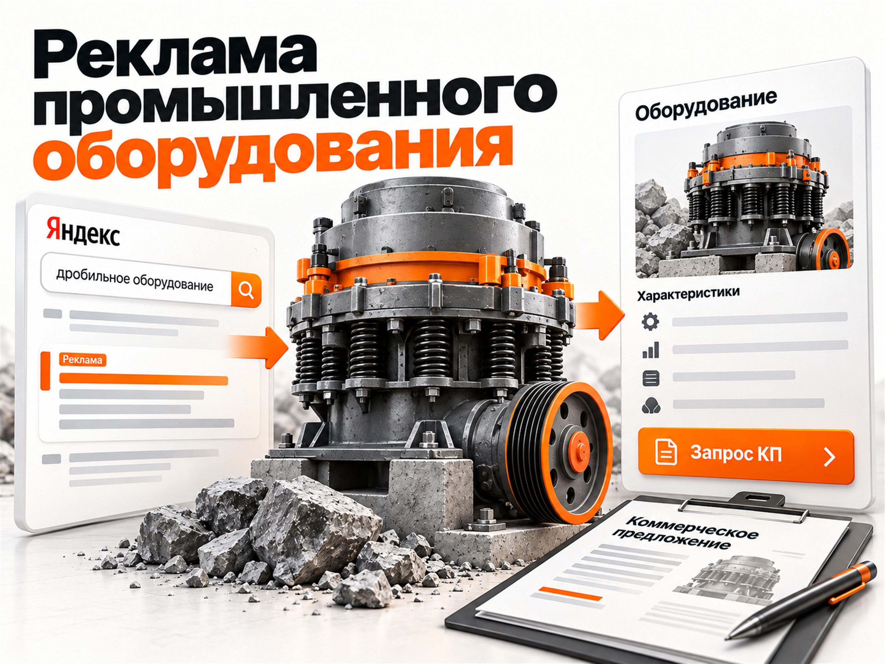
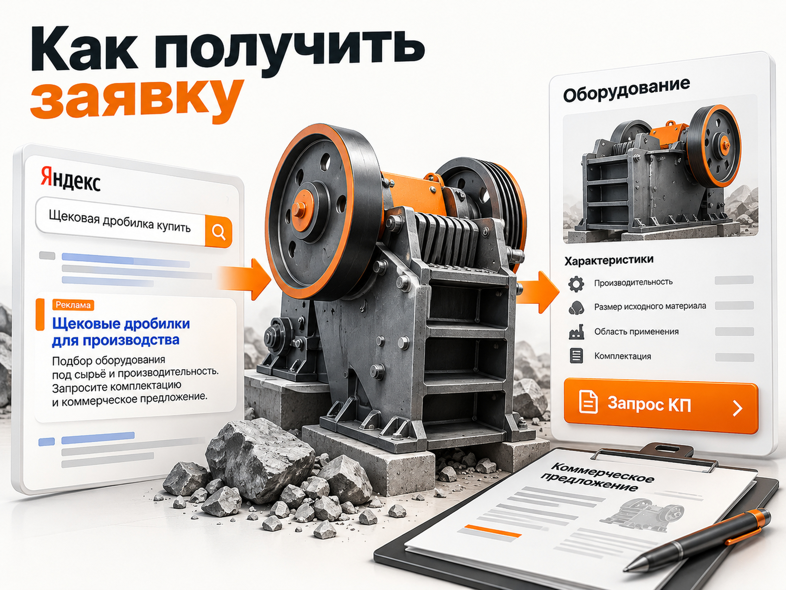
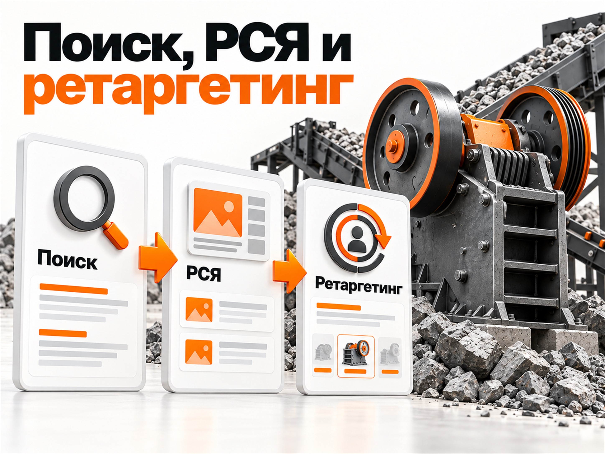
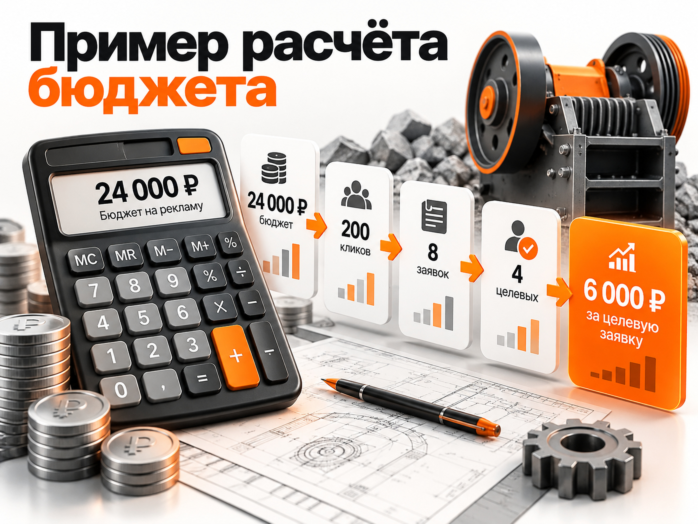

Блог о платном трафике
Реклама промышленного оборудования: как получать B2B-заявки
Рекламу промышленного оборудования в Яндекс Директе лучше начинать с конкретных товарных направлений и сформированного поискового спроса. Для продажи станков, дробилок, производственных линий и других агрегатов важны точные поисковые запросы, технические характеристики на сайте и возможность запросить коммерческое предложение.
Главный показатель эффективности здесь не количество заявок, а стоимость привлечения потенциальных покупателей, которые действительно заинтересованы в оборудовании и могут заключить договор.
В моём проекте по рекламе промышленных дробилок удалось получить 64 заявки через формы по 546 ₽. Но переносить эту стоимость на другие виды оборудования нельзя. Итог зависит от спроса, конкуренции, посадочной страницы и того, что считается заявкой.

Чем реклама промышленного оборудования отличается от обычной рекламы
Покупка промышленного оборудования часто требует согласования между инженером, технологом, руководителем производства и отделом закупок. Каждый оценивает предложение по своим критериям.
Технологу важны производительность, точность и совместимость с существующей линией. Закупщик изучает стоимость, поставку и документы. Руководителя интересуют окупаемость, надёжность и дальнейшие расходы на эксплуатацию.
В рекламе нужно учитывать несколько особенностей:
- Узкий спрос на отдельные виды станков и агрегатов.
- Высокую стоимость ошибки при выборе нецелевых запросов.
- Продолжительный цикл сделки и согласование технического задания.
- Разницу в стоимости и маржинальности оборудования.
- Большую долю обращений через телефон и электронную почту.
- Необходимость технической консультации перед покупкой.
Поэтому универсальная кампания на весь ассортимент редко бывает лучшим решением. Но и создавать отдельную рекламную кампанию под каждую модель не нужно, особенно при небольшом количестве заявок.
Как разделить оборудование на рекламные направления
Структуру рекламы стоит строить по задачам покупателей и экономике товарных групп.
Например, поставщик промышленной техники может разделить ассортимент на дробилки, сортировочные установки, конвейеры и комплектные производственные линии.
Внутри каждого направления спрос дополнительно различается по назначению, производительности, типу сырья, модели и другим характеристикам.
Отдельное рекламное направление особенно оправданно, если оборудование отличается:
- целевой аудиторией;
- стоимостью и маржинальностью;
- географией поставок;
- посадочной страницей;
- допустимой стоимостью привлечения клиента.
При малом объёме конверсий лучше объединять близкие товарные группы, сохраняя возможность анализировать их результат отдельно.
Какие поисковые запросы использовать в Яндекс Директе
Для рекламы оборудования недостаточно собрать запросы со словами «купить» и «цена». Промышленные покупатели часто ищут технику по характеристикам, назначению или конкретной модели.
Рассмотрим условный пример для поставщика дробильного оборудования.
| Тип спроса | Пример запроса |
|---|---|
| Коммерческий | купить промышленную дробилку |
| По типу оборудования | щековая дробилка купить |
| По техническим параметрам | дробилка 20 тонн в час |
| По производственной задаче | оборудование для дробления камня |
| По модели | название конкретной модели дробилки |
| По комплектации | дробильно-сортировочная линия под ключ |
Это примеры поисковых формулировок, а не готовое семантическое ядро. Прежде чем добавлять запрос, нужно проверить, действительно ли компания продаёт подходящее оборудование.
Особое внимание стоит уделять нецелевому спросу.
Для поставщика промышленных дробилок запросы о бытовых измельчителях, самостоятельном изготовлении станков, чертежах, вакансиях и учебных работах обычно бесполезны.
Но автоматически исключать слова «характеристики», «инструкция» или «ремонт» во всех кампаниях тоже неправильно. Инженер потенциального заказчика может изучать техническую документацию перед покупкой.
В Яндекс Директе необходимо проверять фактические поисковые запросы и регулярно уточнять минус-фразы и настройки автотаргетинга.
Пример рекламного объявления для промышленного оборудования
Хорошее поисковое объявление должно показать, какое именно оборудование предлагается и какое действие покупатель может совершить дальше.
Допустим, компания продаёт щековые дробилки для промышленного применения.
Поисковый запрос: «щековая дробилка купить».
Пример заголовка: «Щековые дробилки для производства».
Пример текста: «Подбор оборудования под сырьё и производительность. Запросите комплектацию и коммерческое предложение».
Такой вариант точнее общего сообщения «Промышленное оборудование по выгодным ценам».
После клика пользователь должен попасть не на главную страницу поставщика, а в соответствующий раздел каталога или карточку оборудования.
На странице необходимо показать производительность, допустимый размер исходного материала, характеристики, комплектацию и условия поставки.
Если оборудование изготавливается под заказ, вместо обычной покупки целевым действием может быть запрос расчёта или отправка технического задания.
Это условный пример логики рекламного объявления, а не описание конкретного объявления из моего кейса.

Что лучше для оборудования: Поиск, РСЯ или ретаргетинг
Выбор зависит от сформированного спроса, стоимости трафика и качества получаемых обращений.
| Канал | Когда использовать | Что контролировать |
|---|---|---|
| Поиск | Покупатель уже ищет станок, модель или поставщика | Релевантность запросов, CPL, квалификацию |
| РСЯ | Нужно расширить охват за пределы прямого поиска | Качество аудитории, площадки, целевые обращения |
| Ретаргетинг | Пользователь изучал оборудование, но не обратился | Возвраты, повторные обращения, заявки |

Поиск
Для оборудования с существующим коммерческим спросом Поиск обычно становится первым каналом тестирования.
В объявлениях полезно указывать конкретный тип оборудования и действительно доступные условия поставки.
РСЯ
Рекламная сеть Яндекса позволяет обращаться к более широкой аудитории. Но дешёвые клики в промышленном B2B не гарантируют дешёвые квалифицированные заявки.
Я бы использовал в креативах реальные фотографии оборудования, производственных линий, узлов и готовых объектов.
При этом не стоит автоматически объединять Поиск и РСЯ в одну оценку эффективности. Каналы могут существенно отличаться по качеству обращений.
Ретаргетинг
Покупатель сложной техники может возвращаться к выбору несколько раз.
Для повторной рекламы подходят посетители конкретных категорий, моделей и страниц с технической документацией.
Полезнее предложить им расчёт комплектации или консультацию инженера, чем повторно показывать общее объявление о продаже оборудования.
Товарные объявления
Если у компании большой структурированный каталог стандартных моделей, можно дополнительно проверить товарные объявления с использованием фида.
Для единичных заказных линий с индивидуальной комплектацией такой подход не всегда подходит. В этих случаях важнее запрос технического задания и персональный расчёт.
Какая посадочная страница нужна для рекламы оборудования
Для рекламы промышленного оборудования посадочная страница должна помогать покупателю проверить техническую применимость предложения и получить расчёт стоимости.
Минимальный набор информации:
- Назначение и область применения.
- Производительность и основные характеристики.
- Доступные модели и комплектации.
- Фотографии реального оборудования.
- Сроки и география поставки.
- Гарантия, монтаж и пусконаладка.
- Техническая документация.
- Реализованные проекты.
- Возможность получить коммерческое предложение.
Отдельное значение имеет первый экран.
Если пользователь ищет конкретную дробилку, ему нужно сразу понять, что компания продаёт нужный тип оборудования. Не стоит заставлять его искать необходимую категорию внутри общего каталога.
Для заказной промышленной техники хороший призыв к действию может звучать так: «Отправьте техническое задание для расчёта оборудования».
Запрашивать только номер телефона не всегда достаточно. В промышленном B2B полезно позволить потенциальному клиенту прикрепить техническое задание или написать на электронную почту.
Как оценивать качество заявок и эффективность рекламы
В продаже промышленного оборудования нельзя делать вывод об эффективности только по стоимости отправки формы.
Рекламная кампания может получать десятки обращений, но часть из них окажется запросами на запчасти, ремонт, бытовую технику или оборудование с неподходящими характеристиками.
Я рекомендую разделять следующие показатели:
| Показатель | Что показывает |
|---|---|
| CPL | Стоимость полученного обращения |
| Квалифицированный CPL | Стоимость обращения подходящего покупателя |
| Стоимость КП | Расходы на получение запроса, дошедшего до коммерческого предложения |
| CAC | Расходы на привлечение покупателя, заключившего сделку |
Для квалификации важно определить, подходит ли клиенту оборудование, соответствует ли заявка направлению продаж и есть ли реальная потребность в приобретении.
При длинном цикле сделки необходимо учитывать звонки, обращения по электронной почте и дальнейшее движение потенциального покупателя в CRM.
Яндекс Метрика поддерживает передачу офлайн-конверсий, включая статусы из CRM. При достаточном количестве корректно переданных данных их можно использовать для оценки и оптимизации рекламных кампаний.
Однако в узком B2B с небольшим количеством сделок нельзя рассчитывать, что автоматическая стратегия быстро обучится только на продажах. На старте могут потребоваться более частые целевые действия и ручная проверка качества лидов.
Подробнее о механике передачи данных я рассказывал в статье об офлайн-конверсиях Яндекс Директа.
Реальный кейс: реклама промышленных дробилок
В моём проекте для поставщика промышленных дробилок продвигалось оборудование стоимостью от нескольких миллионов рублей.
Зафиксированные результаты рекламной кампании:
| Показатель | Результат |
|---|---|
| Рекламный расход | 35 000 ₽ |
| Заявки через формы | 64 |
| Средняя цена заявки | около 546 ₽ |
Дополнительно поступали обращения через электронную почту, телефон и виджеты сайта. Они не включены в указанное количество заявок через формы.
Этот проект показывает, что высокая стоимость промышленного оборудования сама по себе не мешает получать обращения из Яндекс Директа.
Но есть важное ограничение. 64 отправки формы нельзя автоматически считать 64 квалифицированными потенциальными покупателями. Для оценки коммерческого результата потребовались бы данные о дальнейших переговорах и продажах.
Показатели относятся к конкретному историческому проекту и не являются текущей средней стоимостью заявки на промышленное оборудование в 2026 году.
Подробности доступны в кейсе поставщика промышленных дробилок.
Как рассчитать бюджет на рекламу промышленного оборудования
Тестовый бюджет Яндекс Директа зависит от стоимости перехода, ожидаемой конверсии страницы и необходимого количества обращений.
Базовый расчёт:
Рекламный бюджет = количество кликов × средняя стоимость клика.
Далее можно оценить количество обращений и стоимость квалифицированной заявки.
Рассмотрим исключительно расчётный пример.
| Параметр | Условное значение |
|---|---|
| Средняя стоимость клика | 120 ₽ |
| Количество кликов | 200 |
| Тестовый бюджет | 24 000 ₽ |
| Конверсия сайта в заявку | 4% |
| Ожидаемые обращения | 8 |
| Доля квалифицированных заявок | 50% |
| Квалифицированные заявки | 4 |
| Стоимость квалифицированной заявки | 6 000 ₽ |
Это арифметическая модель с условными исходными параметрами, а не прогноз реального рекламного кабинета.

В конкретной нише цена клика и конверсия могут существенно отличаться. При небольшом количестве заявок результат также будет нестабильным.
Поэтому первоначальный тест должен ответить на три вопроса:
- Сколько стоит привлечение обращения по конкретной товарной группе?
- Какая доля обращений соответствует требованиям компании?
- Какое количество подходящих покупателей можно получить при доступном спросе?
Как определить допустимую стоимость заявки
Бизнесу необходимо понимать максимально допустимые расходы на привлечение покупателя.
Например, если компания готова потратить на получение одной продажи 60 000 ₽, а из квалифицированных обращений в покупку превращается 10%, допустимая стоимость квалифицированного лида составит 6 000 ₽.
Формула:
Допустимый CPL квалифицированного лида = допустимый CAC × конверсия квалифицированного лида в продажу.
Это позволяет оценивать рекламу исходя из экономики, а не сравнивать стоимость заявок с чужими кейсами.
Для компаний, которые запускают рекламу впервые, я бы начинал с ограниченного количества приоритетных товарных групп и затем уточнял бюджет по фактическим данным.
Рассчитать предварительные расходы можно в калькуляторе рекламного бюджета.
Как запускать рекламу промышленного оборудования в 2026 году
Я бы придерживался следующего порядка работы.
- Определить приоритетный ассортимент. Выбрать оборудование с достаточной маржинальностью, понятным спросом и реальными условиями поставки.
- Изучить спрос. Проверить коммерческие, модельные и технические поисковые запросы по каждому направлению.
- Подготовить сайт. Обеспечить соответствие объявлений посадочным страницам, проверить техническую информацию и формы обращения.
- Настроить аналитику. Учитывать заявки, звонки и обращения по электронной почте. При наличии CRM предусмотреть передачу квалифицированных лидов.
- Запустить сформированный спрос. Начать с подходящих поисковых направлений, учитывая объём доступного трафика.
- Проверить РСЯ и ретаргетинг. Подключать дополнительные форматы там, где они оправданы бюджетом и бизнес-задачей.
- Оценивать качество обращений. Проверять не только CPL, но и запросы на КП, переговоры и дальнейшие сделки.
При ограниченном бюджете я не рекомендую создавать множество кампаний без достаточного объёма данных. Лучше проверить несколько наиболее перспективных направлений, а затем масштабировать те из них, которые приводят подходящих клиентов.
Ошибки, из-за которых реклама оборудования не окупается
Весь ассортимент в одной рекламной кампании. Сложно понять, какая группа оборудования расходует бюджет и приносит результат.
Слишком общие объявления. Сообщение «Промышленное оборудование высокого качества» не объясняет, что именно предлагает компания.
Недостаток технической информации. Покупатель может отказаться от обращения, если не находит важных характеристик, документов и вариантов комплектации.
Оптимизация только по формам. Дешёвые заявки не всегда приводят к переговорам и продажам.
Отсутствие учёта звонков и писем. Часть реальных B2B-обращений остаётся за пределами рекламной аналитики.
Слишком ранняя оценка результата. Крупная закупка может требовать нескольких согласований. Для промежуточной оценки полезнее использовать качественные заявки и запросы на КП, чем ждать исключительно завершённых продаж.
Сколько стоят услуги по настройке рекламы оборудования
Стоимость моей работы с Яндекс Директом начинается от 30 000 ₽ в месяц. Рекламный бюджет оплачивается отдельно.
В работу входят анализ спроса, подготовка структуры рекламных кампаний, настройка объявлений и аналитики, запуск и последующая оптимизация.
Для промышленного B2B особое внимание уделяю качеству обращений, технической специфике товаров и связи рекламы с дальнейшими продажами.
Если компания уже использует Яндекс Директ, сначала стоит проверить действующие кампании и выяснить, какие направления дают квалифицированные заявки.
Подробнее об условиях можно прочитать на странице настройки и ведения Яндекс Директа.
Итог
Реклама промышленного оборудования в Яндекс Директе может привлекать покупателей даже для техники стоимостью несколько миллионов рублей.
Но результат зависит не только от настроек кампании. Необходимо правильно разделить ассортимент, подобрать поисковые запросы, подготовить технические страницы и учитывать качество обращений.
Для первого запуска я бы выбрал наиболее перспективные товарные направления, проверил Поиск и затем принимал решение о расширении рекламы на основе квалифицированных заявок и экономики продаж.